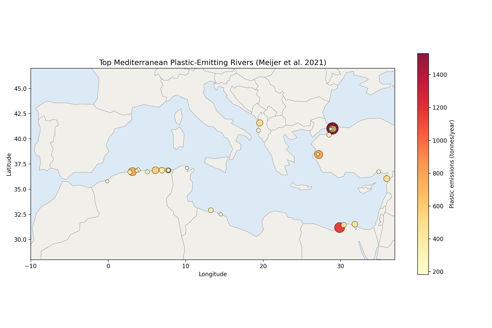

Julien Nahon
I first learnt about the ocean cleanup project in 2020 and I've been following it ever since. This small project looks to demonstrate my abilities. I hope this helps demonstrate that I could be an ideal candidate for your next internship position.
Background
I'm an applied mathematics graduate with environmental research experience (Environment Canada, Statistics Canada), followed by 2.5 years managing family business operations. I'm now returning to environmental/sustainability work with added operations and leadership experience. I'm currently applying to masters programs around Europe to continue my applied mathematics studies.
Why this project
For this project I decided to combine my coding abilities with my interest in modelling systems. I find it incredibly impreesive that I'm currently sitting in Ottawa and I have a pretty good idea of where waste accumulates in the Mediterranean wihtout ever getting on a boat! I chose the meditterranean because I have quite a bit of family in the south of France and it's always been one of my favourite bodies of water.
Get in touch
Email: julien@nahon.ca
Simulating River Plastic Transport in the Mediterranean
In 2021, Meijer et al. (2021) studied the distribution of plastic waste from riverine sources across the world. With the results from this study and the open marine data offered by Copernicus Marine service, I was able to use the OpenDrift python library to simulate waste transport in the Meditterranean Sea
The Data
In this study I assume that wind and sea currents are the primary drivers of plastic transport. There are other variables, most notably the type of plastic emitted and wave action. But for ease of modelling I decided to ignore these variables. Therefore I needed wind and see currents dating back multiple years for the Meditterranean sea. Copernicus offers a wide variety of datasets. After looking through I ended up choosing two different datasets. The first one is the 'Mediterranean Sea Physics Analysis and Forecast' (ID: 'cmems_mod_med_phy-cur_anfc_4.2km_P1D-m') for my currents data. This data set had a resolution of 4.2 km, daily, with single near-surface layer of about 1 m. The second is 'Global Ocean Hourly Sea Surface Wind and Stress from Scatterometer and Model' (ID: 'cmems_obs-wind_glo_phy_nrt_l4_0.125deg_PT1H') for my wind data. This dataset is hourly with 10 m wind at 0.125° resolution. The other important dataset that was needed for this project was the one created in 2021 by Meijer et al. for their reserach on global reverine plastic emissions around the globe. From that research paper I was able to isolate 31 rivers that fed into the Meditteranean sea. Based on their emissions we can assume that these represent the vast majority of plastic emissions into the Meditterranean sea and we can regard other rivers as negligible. Information on these rivers can be seen below.
Top 31 Mediterranean Rivers by Plastic Emissions

| Location | Country | Emissions (tonnes/year) |
|---|---|---|
| Eastern Mediterranean / Aegean sea | Türkiye | 1,529 |
| Eastern Mediterranean / Levantine sea | Egypt | 1,144 |
| Eastern Mediterranean / Aegean sea | Türkiye | 794 |
| Western Mediterranean / North Africa | Algeria | 760 |
| Western Mediterranean / North Africa | Algeria | 573 |
| Eastern Mediterranean / Aegean sea | Türkiye | 528 |
| Eastern Mediterranean / Aegean sea | Türkiye | 521 |
| Central Mediterranean / Adriatic sea | Albania | 504 |
| Eastern Mediterranean / Levantine sea | Türkiye | 479 |
| Eastern Mediterranean / Levantine sea | Egypt | 438 |
| Western Mediterranean / North Africa | Algeria | 415 |
| Eastern Mediterranean / Levantine sea | Egypt | 368 |
| Western Mediterranean / North Africa | Algeria | 367 |
| Central Mediterranean / Adriatic sea | Libya | 338 |
| Eastern Mediterranean / Aegean sea | Türkiye | 313 |
| Western Mediterranean / North Africa | Algeria | 309 |
| Eastern Mediterranean / Aegean sea | Türkiye | 301 |
| Western Mediterranean / North Africa | Algeria | 281 |
| Western Mediterranean / North Africa | Algeria | 279 |
| Eastern Mediterranean / Aegean sea | Türkiye | 274 |
| Western Mediterranean / North Africa | Algeria | 260 |
| Central Mediterranean / Adriatic sea | Albania | 236 |
| Eastern Mediterranean / Levantine sea | Türkiye | 234 |
| Western Mediterranean / North Africa | Algeria | 216 |
| Central Mediterranean / Adriatic sea | Libya | 209 |
| Western Mediterranean / North Africa | Algeria | 204 |
| Western Mediterranean / North Africa | Algeria | 197 |
| Central Mediterranean / Adriatic sea | Tunisia | 196 |
| Eastern Mediterranean / Aegean sea | Türkiye | 185 |
| Eastern Mediterranean / Aegean sea | Türkiye | 184 |
| Eastern Mediterranean / Aegean sea | Türkiye | 183 |
The Methodology
Once I had my data I needed a way to simulate plastic elements. For this I used OpenDrift. OpenDrift is a python package for modeling the trajectories and fate of objects or substances drifting in the ocean. PlastDrift, which is a class within the OpenDirft was developed by the Norwegian Meteorological Institute. PlastDrift is a subclass of OpenDrift and aims to simulate plastic debris. I made a lot of assumptions and choices when using PlastDrift. Most of it was based on wanting to run the simulations on my personal computer within a reasonable time frame. The most important assumptions to keep in mind are the following:
- Since no wave data was used. Stokes drift is estimated from wind using look-up tables at a fixed 25 km fetch. This is from the PlastDrift documentation.
- A mixed-layer depth of 50m is assumed. The model's default value.
- We assume a constant rate of emission from each river throughout the simulation period.
- [N] particles are split by each river's share of total emissions, each representing equal mass, so results show relative patterns rather than tonnes of plastic.
- Particles are released at the surface within [1.5 km] of each river mouth, and any placed on land are moved to the nearest ocean cell.
- All debris is modeled as one generic buoyant class (terminal velocity +0.01 m/s, 2% wind drift factor, OpenDrift defaults), with no distinction by size, density, shape or polymer.
- Although terminal velocity is included and vertical mixing is on, sinking makes no difference since the current file has a single layer.
- There is no explicit horizontal diffusion term, so unresolved turbulence is not represented and horizontal spread comes from the seeding radius alone.
The Modelling
With these assumptions I could now run my models. I first extracted the data from the Copernicus datasets and converted them into a format that OpenDrift could read. I then created a script that would seed the model for each of the 31 rivers. I assumed a total of 10000 particles. These 10000 particles were distributed proportionally across the 31 rivers based on their emissions. The seeding is done over time meaning we assume a continous flow from the rivers over the entire time frame. I then ran the simulation for a total of 12 months and a total of 24 months. These two simulations can be seen below
1 year Simulation
2 year Simulation
Results
In both simulations we see a concentration of debris in the western Mediterranean. Specifically the Balearic sea. We also see plastic debris accumulating on the Adriatic sea coastline, the Tunisian coastline, and the Libyan coastline. Comparing this to observational data we see that the model is fairly accurate. We looked at two studies to compare our model to: Hatzonikolakis et al. (2022) and Soto-Navarro et al. (2021). Hatzonikolakis et al. (2022) reported high concentrations of macroplastics in Natura 2000 sites of the Adriatic Sea (Eastern Italy; ECR 5), at the Strait of Sicily (Italy) and in national MPAs of the Levantine Basin (Turkey, Egypt, Lebanon). Soto-Navarro et al. (2021) reported the highest concentrations of eastern Mediterranean, in the Adriatic Sea, the strait of Sicily and on the slopes of the Levantine Basin from Egypt to Turkey. \n These reports are consistent with the results of our model. There are some slight differences. Our model predicted less concentration in the strait of Sicily and more concentration in the Balearic sea. This can be explained due to our assumptions which can be explained below.
Limitations
There are a huge amounts of limitations that are directly correlated with our assumptions.
- No degradation, fragmentation, or sinking. Particles persist indefinitely as a single generic object. This is not seeded in reality
- No size, density, shape, or polymer differentiation. Every particle shares the same terminal velocity and windage, so the model can't distinguish how different particles would behave differently.
- No real wave data. Stokes drift is estimated from wind using a fixed-fetch look-up table rather than actual wave measurements,
- No explicit horizontal turbulence term. The 'randomness' comes only from the seeding radius.
- Limited current/wind resolution. We had a resolution of 4.2 km currents and 0.125° wind which can't resolve features smaller than that scale.
- Constant, non-seasonal river emissions. Meijer et al. annual totals are applied as a steady release rate, missing seasonal variation
- Although terminal velocity is included and vertical mixing is on, sinking makes no difference since the current file has a single layer.
- Limited temporal window. One or two simulated years may not capture interannual variability in circulation.
Code
Placeholder: link to your GitHub repository.